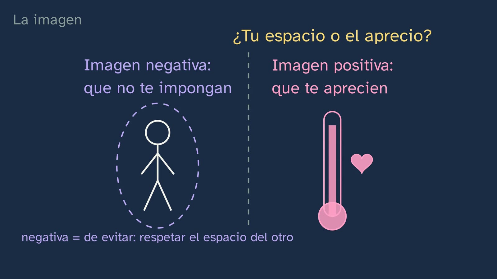
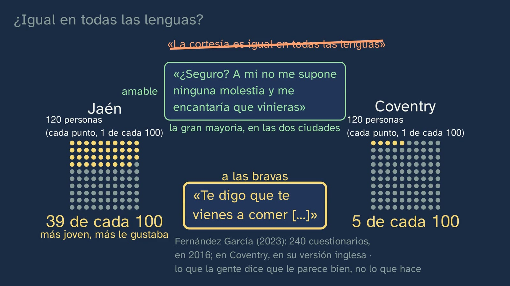

Cuidar la imagen del otro: la cortesía
En pocas palabras
La clase que contesta la pregunta que dejó abierta el laboratorio: ¿por qué arropamos lo que pedimos? Parte de algo de todos los días. Te invitan a un cumpleaños: para decir que sí basta una palabra; para decir que no, usamos once («Uf… es que el sábado no puedo. ¡Qué pena! Pásalo genial»). ¿Por qué? La respuesta tiene nombre, la imagen (face): la idea de uno mismo que cada cual quiere que los demás le reconozcan (Brown y Levinson, 1987, p. 61). El recorrido, en seis pasos:
- Qué cuidamos. La palabra y su historia (el inglés lose face, calco del chino 丟臉 en el siglo XIX; Goffman, 1955) y sus dos caras: la negativa, que no te impongan, y la positiva, que te aprecien. «Negativa» no quiere decir «mala»: viene de los ritos de evitar.
- Qué la amenaza. Pedir, criticar, decir que no. Y lo que casi nadie cuenta: dar las gracias y pedir perdón amenazan la imagen de quien habla (pp. 67–68), con un caso real del COSER: a una señora le piden perdón, y ella contesta que no hay nada que perdonar.
- Cómo se cuida. Los cinco caminos de Brown y Levinson (p. 69), con los tres escalones de la clase 3 dentro, y los suavizadores de dos clases, los que no imponen y los que acercan, con peticiones reales de chicas de 19 y 18 años (ESLORA). Y la respuesta a la clase 3: arropamos porque pedir amenaza la imagen del otro.
- El «no» llega tarde. Entre turnos pasan unas dos décimas de segundo; preparar una sola palabra lleva seis: preparamos la respuesta mientras el otro habla, y por eso un silencio se nota. Los «no» llegan, de media, más tarde que los «sí» (Stivers y otros, 2009: diez lenguas, sin el español). Y una conversación real en español, con su silencio medido: 1,9 segundos (el vídeo enseña su onda, sin sus voces).
- Reforzar. La cortesía no sólo apaga fuegos: también halaga (Kerbrat-Orecchioni, 1996). El ofrecimiento que se rechaza y se insiste, como un baile, en un pueblo de Huesca y en un piso de Galicia.
- ¿Igual en todas las lenguas? El error típico, desmontado con una encuesta en Jaén y en Coventry; la propuesta de Diana Bravo (autonomía y afiliación) y la confianza (Hernández Flores); y el debate, universal o de cada cultura, con el mejor argumento de cada postura y sin veredicto.
Qué aporta que no traen los libros. En el contraste con dieciséis proyectos editoriales de 1.º de Bachillerato, revisados el 29 y el 30/09/2026 sólo para comparar, la cortesía como principio sólo aparece en uno (Akal) y Brown y Levinson no aparecen en ninguno. En YouTube, lo más visto presenta su modelo como un recetario universal de «sólo cuatro» estrategias; en español no hay nada con vistas para Bachillerato (revisión de referentes de la clase, 23/10/2026). Nadie dibuja juntas las dos cifras de los turnos, los 200 y los 600 milisegundos; nadie explica por qué dar las gracias amenaza tu propia imagen; nadie mide un silencio real en español, ni cuenta que en español el ofrecimiento se insiste, ni nombra la autonomía y la afiliación. Esta clase lo hace con datos reales y abiertos que se pueden usar mañana en el aula, y con la honradez de decir qué es medida, qué es propuesta y qué se discute.
Objetivo. Al terminar, el alumnado sabrá explicar la cortesía como el cuidado de la imagen propia y ajena, reconocer las estrategias que suavizan lo que la amenaza o la refuerzan, reconocer por qué un «no» suele llegar más tarde y arropado, y explicar por qué lo cortés cambia de una lengua a otra, con el español y el inglés.
Currículo
Real Decreto 243/2022, Lengua Castellana y Literatura I, materia común de 1.º de Bachillerato (texto consolidado del BOE, comprobado para el tema el 29 y el 30/09/2026: su última actualización, del 02/07/2026, sólo toca el artículo 23.4, no el anexo de Lengua).
| Elemento | Qué dice el decreto | Dónde se trabaja |
|---|---|---|
| Saber básico (bloque B, «Comunicación», 1. Contexto) | «Componentes del hecho comunicativo: grado de formalidad de la situación y carácter público o privado; distancia social entre los interlocutores; propósitos comunicativos e interpretación de intenciones; canal de comunicación y elementos no verbales de la comunicación.» | «Distancia social»: la profesora frente al compañero (2:13) y la confianza, que en Jaén explicaba la preferencia por la insistencia amable (15:11). «Interpretación de intenciones»: la que ofrece lee un silencio como un no (11:00), la pista de la fiesta de la clase 1 (11:28) y el ejercicio 3 |
| Saber básico (bloque B, 3. Procesos) | «Interacción oral y escrita de carácter formal. Tomar y dejar la palabra. Cooperación conversacional y cortesía lingüística.» | «Cortesía lingüística», la clase entera. «Tomar y dejar la palabra», el capítulo de los turnos (8:57–11:46): cuánto se tarda en tomar la palabra y qué dice ese tiempo. Tomar y dejar la palabra en un debate formal, en el tema 11 |
| Saber básico (bloque D, «Reflexión sobre la lengua») | «Elaboración de conclusiones propias sobre el funcionamiento del sistema lingüístico con un metalenguaje específico a partir de la observación, comparación y clasificación de unidades comunicativas y del contraste entre lenguas […]» | El metalenguaje (imagen negativa y positiva, acto que amenaza, los cinco caminos, autonomía y afiliación), la clasificación de frases (4:44; ejercicios 1 y 2) y el contraste entre lenguas: el face inglés, calco del chino (3:39), las diez lenguas de los turnos (9:22) y Jaén frente a Coventry (14:00) |
| Competencia específica 3 | «Producir textos orales y multimodales, con atención preferente a textos de carácter académico, con rigor, fluidez, coherencia, cohesión y el registro adecuado, atendiendo a las convenciones propias de los diferentes géneros discursivos, y participar en interacciones orales con actitud cooperativa y respetuosa, tanto para construir conocimiento y establecer vínculos personales, como para intervenir de manera activa e informada en diferentes contextos sociales.» | Su descripción dice que «adecuar los usos orales al propósito comunicativo y calibrar sus efectos en el interlocutor es esencial para una comunicación eficaz, basada en el respeto y el cuidado recíproco». La clase da nombre a ese cuidado recíproco: la imagen del otro y la propia, y cómo se calibra un «no» |
| Competencia específica 9 | «Consolidar y profundizar en el conocimiento explícito y sistemático sobre la estructura de la lengua y sus usos, y reflexionar de manera autónoma sobre las elecciones lingüísticas y discursivas, con la terminología adecuada, para desarrollar la conciencia lingüística, para aumentar el repertorio comunicativo y para mejorar las destrezas tanto de producción oral y escrita como de comprensión e interpretación crítica.» | Su descripción pide trabajar «integrando los niveles morfosintáctico, semántico y pragmático». Aquí, la pragmática con la forma: el imperativo y la fórmula, el diminutivo («un vasito»), las marcas de grupo («tío») y lo que se minimiza («un momento») |
| Criterio 3.2 | «Participar de manera activa y adecuada en interacciones orales (formales e informales) y en el trabajo en equipo con actitudes de escucha activa y estrategias de cooperación conversacional y cortesía lingüística.» | En el vídeo, sólo en análisis: el alumno observa estrategias de cortesía, pero no interactúa. Para trabajarlo de verdad, la actividad de esta ficha (versión A) pone a los alumnos a invitar y a rechazar en voz alta, en equipo |
| Criterio 9.2 | «Explicar y argumentar la interrelación entre el propósito comunicativo y las elecciones lingüísticas del emisor, así como sus efectos en el receptor, utilizando el conocimiento explícito de la lengua y un metalenguaje específico.» | Qué imagen amenaza cada frase (4:44 y ejercicio 1), los cinco caminos de una misma petición (ejercicio 2), el «no» arropado y lo que tiene que inferir el otro (ejercicio 3), y el efecto de pasarse (el boli con tres «perdona», 7:40) |
Lo que hay que traer. De la clase 1, la implicatura: la fiesta del sábado («Tengo examen el lunes»), que hoy vuelve como un camino de la cortesía. De la clase 2, los actos de habla directos e indirectos. De la clase 3, los tres escalones (directa, fórmula, pista), los suavizadores, las tres pesas de Brown y Levinson (distancia, poder y lo que se pide) y el contraste de imperativos entre españoles y británicos (9,3 % frente a 1,6 %; Díaz Pérez, 2005). De la ESO, los mismos saberes en 3.º y 4.º: «Interacción oral y escrita de carácter informal y formal: cooperación conversacional y cortesía lingüística» y la «Identificación y uso de las variaciones de las formas deícticas (fórmulas de confianza y cortesía) en relación con las situaciones de comunicación» (Real Decreto 217/2022, Lengua Castellana y Literatura, bloque B de tercero y cuarto).
Dónde vuelve. La clase 5, «Tú, usted y el registro», trata el tratamiento, que aquí sólo asoma (en la misma entrevista de Conxo que usa la clase, quien entrevista se corrige: «[…] a ti es com-, oh, perdón, a usted […]»; COSER-2408-01, p. 14). La clase 7 es el segundo laboratorio del tema. Tomar y dejar la palabra en un debate formal, en el tema 11.
Cómo está construida la clase
Capítulos del vídeo
Unos diecinueve minutos, en doce capítulos. Es una clase de teoría, con Vera, sin bata, a su mesa, pero sus datos son reales: tres fragmentos del COSER (entrevistas en pueblos) y cinco de ESLORA (conversaciones y entrevistas de Galicia), uno con su silencio medido sobre su onda; sus voces no suenan, porque se las podría reconocer. La pizarra tiene dos figuras que vuelven toda la clase con el mismo significado: la burbuja discontinua (la imagen negativa, el espacio de cada cual) y el termómetro con un corazón (la positiva, el aprecio). Lo que amenaza llega como un dardo, y lo que se vuelve contra quien habla, como un bumerán.
| Capítulo (minuto) | Qué hace | Base formativa |
|---|---|---|
| Qué vamos a ver (0:00) | Vera saluda; el mapa del tema, con la cuarta clase resaltada; hoy, por qué arropamos lo que pedimos | Saber dónde se está (aprendizaje multimedia: señalización) |
| Lo que ya sabes (0:19) | ¿Qué tres cosas pesan en una petición? Pausa con contador; las pesas caen en la balanza y queda un «?»: qué cuidamos | Recuperar (Roediger y Karpicke, 2006), con un ejemplo de la propia materia |
| Las soluciones (0:52) | Los tres ejercicios de la clase 3, cada uno con su enunciado; «Yo se la mando luego» deja una pregunta para hoy | Espaciar; las soluciones, con su enunciado |
| La pregunta (2:49) | El gancho: el cumpleaños, en dos paneles iguales, con un contador de palabras (1 frente a 11). Vera, a cámara (3:13): «¿Por qué lo hacemos?» | El gancho, con su contexto |
| La imagen (3:21) | «Quedar bien», «salvar la cara» y face; la historia de la palabra (丟臉, el siglo XIX, Goffman en 1955); las dos caras; «negativa ≠ mala». Un momento para pensar (4:25): la última frase que te sentó mal | Primero la intuición, después lo exacto; el error de la palabra, cortado antes de que nazca |
| Lo que la amenaza (4:34) | Para y piensa con contador: tres frases (la pausa, en 4:58); los dardos. Lo que casi nadie cuenta: «gracias» y «perdona», como un bumerán (5:24). Un caso real, en Conxo (5:49) | Clasificar antes de oír la respuesta; ¿cómo lo sabemos?, con un caso real |
| Cómo se cuida (6:09) | El árbol de los cinco caminos, dibujado vacío y recorrido por una petición; los escalones de la clase 3 se posan en él (7:02); pasarse también dice algo (7:40). Los suavizadores, de dos clases, con peticiones reales (7:48). La pregunta de la clase 3, con contador (8:26), y su respuesta (8:37). Vera, a mitad (8:47) | La forma vacía antes que lo que la llena; espaciar (vuelve el laboratorio) |
| El «no» llega tarde (8:57) | «¿Cómo lo sabemos?»: dos pistas de voz sobre una regla de milisegundos; 200 ms frente a 600 (9:12–10:05); los «no», más tarde, y los 0,7 s (10:05). Predicción (10:53) y la onda real de las uñas, con el silencio contado en directo (10:56). La fiesta de la clase 1, como una pista (11:28) | ¿Cómo lo sabemos?; predecir antes de ver (White y Gunstone, 1992); recuperar la clase 1 |
| Reforzar (11:48) | El cumplido, que para Brown y Levinson amenaza («Me encanta tu chaqueta», que puede obligar a dejarla) y para Kerbrat-Orecchioni halaga; «¡muchísimas gracias!»; un cumplido real entre las amigas de las uñas, «Me encanta tu chupa» (12:20). El ofrecimiento como un baile, en Tramaced (12:31), con contador (13:02), y el mismo baile entre jóvenes, en Galicia (13:28) | El modelo, con sus límites; datos reales, de dos generaciones |
| ¿Igual en todas las lenguas? (13:43) | El error típico, tachado; predicción (la pausa, en 14:25); Jaén y Coventry, en rejillas de cien puntos (14:28); «no hay suficiente confianza» (15:08) y la propuesta de Bravo (15:21); la franqueza de la confianza y su abuso (16:07) | El error, desmontado razonando (Muller y otros, 2008) |
| Cortesía: ¿universal o de cada cultura? (16:35) | El debate, con el mejor argumento de cada postura y su contador (17:29) | Lo controvertido, como controvertido (artículo 9 de la Constitución del canal) |
| Para practicar y seguir pensando (17:32) | El resumen, avisando de que se repite; tres ejercicios que mezclan clases (18:05); la pregunta abierta, con contador (18:44); la clase siguiente; la despedida (19:13) | Espaciar; la pregunta abierta |


Plan de una sesión de 50 minutos
| Minutos | Qué se hace |
|---|---|
| 0–4 | Sin vídeo, «Antes de empezar» en la hoja: las dos maneras de insistir, A o B, y una razón. A mano alzada, cuántos marcan A (sola o con B): se apunta en la pizarra, convertido a «de cada 100», y no se comenta. |
| 4–10 | Vídeo de 0:00 a 4:34. En 0:27 basta el contador del vídeo. En 4:32, treinta segundos para la pregunta 2 de la hoja. |
| 10–14 | Vídeo de 4:34 a 6:09. Parar en 4:57: en parejas, la pregunta 3 de la hoja (un minuto). Seguir; en 5:46 basta el contador del vídeo. |
| 14–19 | Vídeo de 6:09 a 8:57. Parar en 8:31: cada cual escribe en una frase por qué arropamos lo que pedimos, y después lo oye. |
| 19–24 | Vídeo de 8:57 a 11:48. En 10:53, cada cual apunta su número en la hoja (pregunta 7); tras 11:26, se compara. |
| 24–31 | Vídeo de 11:48 a 16:04. Parar en 14:26: a mano alzada, ¿Jaén o Coventry? En 16:04, volver al recuento del principio: ¿se parece la clase a alguna de las dos ciudades?, ¿y qué no se puede concluir? (pregunta 9 de la hoja). |
| 31–46 | La actividad: el silencio del «no», medido (abajo). |
| 46–50 | Vídeo de 16:07 al final (19:21): la confianza, el debate, el resumen, los ejercicios y la pregunta abierta. Los ejercicios, para casa; la pregunta abierta, para empezar la sesión siguiente. |
Errores típicos y cómo se tratan
Con una advertencia honesta, como en la clase 3: ninguno de estos errores está medido con alumnado español de Bachillerato. El primero es el que la ficha del tema prevé para esta clase; los demás son previsibles por lo que la clase enseña, y de algunos se dice qué hay detrás.
- «La cortesía es igual en todas las lenguas». Que se practica distinto lo aceptan todos, también Brown y Levinson: «the content of face will differ in different cultures» (1987, p. 62), y el ofrecimiento que se rechaza y se insiste se da «in many lands» (p. 233), con distinto peso: «In England and the U.S.A., for example, offers are not very threatening FTAs, but in Japan an offer as small as a glass of ice-water can occasion a tremendous debt» (p. 247). Escandell (1995, p. 60): «cada cultura tiene su propia concepción de lo que es deseable, de lo que es imponerse o mostrar solidaridad». Lo que se discute es otra cosa: si debajo hay algo común (error 8). La clase lo plantea en 13:43, lo tacha y lo desmonta con la encuesta de Jaén y Coventry: una insistencia a las bravas le pareció adecuada a 39 de cada 100 en Jaén y a 5 de cada 100 en Coventry (Fernández García, 2023, tabla 1). Ojo con el error contrario, que es el tópico (error 7).
- «La imagen negativa es la mala imagen». Las etiquetas vienen de los «ritos negativos» de Durkheim, los ritos de evitar: «Negative politeness corresponds to Durkheim's 'negative rites', rituals of avoidance» (Brown y Levinson, 1987, p. 129; nota 8, p. 285). La imagen negativa es querer que no te impongan, no una imagen peor. Que la confusión es fácil lo muestran los propios lingüistas: Bravo titula su artículo «¿Imagen "positiva" vs. imagen "negativa"?» (1999); Albelda propone reservar «positivo» y «negativo» para la imagen y llamar a las cortesías «mitigadora» y «valorizante» (2003, pp. 299–300), y Kerbrat-Orecchioni llama cortesía negativa y positiva a otra cosa que Brown y Levinson (1996, p. 54; ver «Para el profesorado»). La clase lo corta en cuanto nace (4:17): «negativa ≠ mala», «negativa = de evitar». En el aula ayuda decir durante un tiempo «la imagen de que no me impongan» y «la de que me aprecien».
- «Cuantos más rodeos, más cortés». Brown y Levinson ordenan los caminos por el riesgo, pero avisan de que pasarse también comunica: nadie elige un camino «less risky than necessary, as this may be seen as an indication that the FTA is more threatening than it actually is» (1987, p. 60, supuesto vi). Es el boli con tres «perdona» de la clase (7:40). En 1987, además, concedieron que quizá se equivocaron al poner las estrategias en una sola escala (p. 18), y Blum-Kulka encontró que lo más cortés era la fórmula, no la pista (según los propios Brown y Levinson, p. 19). Escandell (1995, pp. 52–53): «lo más indirecto no es, necesariamente, lo más cortés». La clase dice «según ellos» al dar la regla (6:54), y la clase 3 ya lo trabajó con la pista del pelo.
- «El silencio no comunica nada», o «sólo es que el otro está pensando». Como lo normal es contestar casi pegado (en diez lenguas, lo más frecuente está entre 0 y 200 ms; Stivers y otros, 2009, p. 10588), cualquier retraso significa algo: «deviations will come to have a natural communicative significance (e.g., delays implying problems with the prior utterance)» (pp. 10587–10588). Levinson (2016, p. 9): «slow responses carry semiotic significance – typically conveying reluctance to comply with the expected response». Y quien escucha lo nota: en un experimento con 380 personas, el juicio sobre la disposición de quien contesta cae de forma significativa entre los 700 y los 800 ms (Roberts y Francis, 2013). La clase lo enseña en tres pasos: los 200 ms frente a los 600 de preparar una palabra (9:12–10:05), los 0,7 s (10:14) y la conversación de las uñas, en que es la que ofrece la que lee el silencio como un no: «¿No?» (11:00).
- El error contrario: «todo "no" llega tarde, y todo silencio es un no». Los «no» llegan de media más tarde, pero muchos empiezan tan pronto como los «sí»: en 195 respuestas de llamadas telefónicas en inglés, la mayoría de las respuestas, de las dos clases, caen entre 0 y 700 ms, y lo que se retrasa es el «no» propiamente dicho, que va detrás de una respiración, un «well» o un «uhm» (Kendrick y Torreira, 2015, pp. 270–272). En nuestro corpus, el «no» ritual al café llega en unas dos décimas («Para el profesorado»). Y un silencio puede ser otras cosas: que el otro no ha oído, que está ocupado, que piensa. Por eso la clase dice «suele», «de media» y «muchas veces» (10:05–10:33).
- «La cortesía es sólo para el otro». También cuidamos la nuestra: dar las gracias amenaza la imagen negativa de quien las da («S accepts a debt, humbles his own face», Brown y Levinson, 1987, p. 67), y pedir perdón, la positiva (p. 68). La clase lo cuenta con un bumerán (5:24) y lo ata a un caso real en que la otra levanta la disculpa (5:49). El matiz que lo completa: las gracias, a la vez, halagan la imagen del otro (Kerbrat-Orecchioni, 1996, p. 54), y por eso se refuerzan (12:14). El ejercicio 1 lo pone a prueba con «Gracias por traerme».
- El tópico: «los de Jaén son bruscos», «los ingleses son fríos», «los españoles son…». La encuesta mide lo que 240 personas de dos ciudades dicen que les parece adecuado en una situación, no cómo es nadie: su autor avisa de que recoge «usos que los informantes consideran adecuados, no necesariamente correspondientes a sus usos reales» (Fernández García, 2023, p. 31) y de que las generalizaciones culturales «acostumbran a implicar empobrecedoras simplificaciones» (p. 4). En la misma encuesta, la gran mayoría aceptó en las dos ciudades la insistencia amable, y en Jaén la brusca gustaba más a los jóvenes: dentro de una ciudad también hay diferencias. La clase dice siempre «en Jaén», «en Coventry», «propone», y dice que Hernández Flores lo observó «en conversaciones de familias y amigos de Salamanca», y la pizarra lo lleva escrito: «lo que la gente dice que le parece bien, no lo que hace» (14:29). La clase 3 ya desmontó el par «los españoles son maleducados» / «los ingleses son hipócritas» con Ballesteros (2001, p. 193).
- «Brown y Levinson dicen que la cortesía es igual en todas partes». No es lo que dicen. Para ellos es universal el esqueleto (querer que no te impongan y querer que te aprecien), que en cada sociedad es «the subject of much cultural elaboration» (1987, p. 13; también p. 62). Y en 1987 concedieron que su noción de tacto quizá refleje «the bias of a culture obsessed with individual rights and wants» (p. 14). La clase lo dice en 13:52 y en 16:40. Varios vídeos muy vistos presentan su modelo como un recetario universal de «sólo cuatro» estrategias, sin el quinto camino, no hacerlo (revisión de referentes).
Preguntas y soluciones
Para y piensa (dentro del vídeo)
- ¿Qué tres cosas pesan en una petición? (0:22; la pausa, en 0:27) La distancia (cuánto os conocéis), el poder (cuánto puede el otro sobre ti) y lo que pides; cuanto más pesan, con más cuidado se pide (Brown y Levinson, 1987, pp. 74 y 76; clase 3). El vídeo contesta en 0:31, con la balanza.
- Piensa en la última frase que te sentó mal. ¿Qué te tocó: tu espacio, o el aprecio? (4:25; pausa con contador) No tiene una respuesta: sirve para que cada cual pruebe las dos etiquetas en algo suyo. Si la frase te obligaba a algo o se metía en tu tiempo o en tus cosas, tocó la imagen negativa; si criticaba lo tuyo, o a ti, la positiva. Algunas tocan las dos: Brown y Levinson ponen de ejemplo las quejas y las interrupciones (1987, p. 67).
- ¿Qué imagen amenaza cada frase, la negativa o la positiva? (4:44; la pausa, en 4:58) El vídeo contesta en 5:03. «Déjame tus apuntes»: la negativa del otro, porque le impone algo (las peticiones están en la lista de Brown y Levinson, pp. 65–66). «Tu redacción tiene muchas faltas»: la positiva, porque critica lo suyo (p. 66). «No, no voy a tu cumple»: también la positiva, porque le dice que no a lo que quería. Este último no está en su lista: es una aplicación de su definición, la imagen positiva como el deseo de que lo que uno quiere les parezca bien a otros («the want of every member that his wants be desirable to at least some others», p. 62). Valen también, si se razonan, que la crítica toque además la negativa (las quejas amenazan las dos, p. 67) y que el «no» amenace también la imagen de quien lo dice, que puede quedar mal: es lo que la clase llama cuidar las dos imágenes.
- ¿Por qué crees que a veces cuesta tanto decir «perdona»? (5:42; pausa con contador) Porque pedir perdón amenaza la imagen positiva de quien lo pide: reconoce que lo hizo mal, y más si la disculpa es a la vez una confesión («especially if the apology is at the same time a confession», Brown y Levinson, 1987, p. 68). Vale cualquier respuesta que vea que la amenaza es para quien habla, no para quien escucha («quedas como el que la ha liado», «te pones por debajo»).
- ¿Por qué arropamos lo que pedimos? (8:29; pausa con contador; la respuesta, en 8:37) Porque pedir amenaza la imagen del otro, la negativa: le impone algo. Cuanto más pesa la petición (las tres pesas), más la amenaza, y más la arropamos. Es la pregunta que dejó abierta la clase 3, y la respuesta une sus dos mitades: el peso de una petición según Brown y Levinson (1987, p. 76) y los suavizadores que se contaron en el corpus.
- Preparar una palabra lleva seiscientos milisegundos, y entre turnos pasan doscientos. ¿Cómo puede ser? (9:39; pausa con contador; la respuesta, en 9:52) Porque empezamos a preparar la respuesta mientras el otro todavía habla: «responses must be planned in the middle of the incoming turn which is being responded to» (Levinson, 2016, p. 7). Para eso hay que adivinar qué va a decir el otro y cuándo va a acabar. Es la explicación que hoy acepta la mayoría, aunque se discute cuándo empieza esa preparación (el propio Levinson cita en contra a Sjerps y Meyer, 2015). Si alguien contesta «porque las respuestas son cortas», hay que recordarle que los 600 ms son el mejor caso, nombrar un dibujo ya visto (Indefrey, 2011); sin esa ayuda, una palabra lleva un segundo, y una frase corta, un segundo y medio (Levinson, 2016, p. 7).
- Antes de verla: ¿cuánto silencio crees que habrá? (10:49; la pausa, en 10:53) Lo normal serían unas décimas: en esos mismos minutos de la conversación, la mitad de los cambios de turno llegan en menos de 0,13 s. Pero no contesta: hay 1,9 s de silencio, y es la que ofrecía la que lo rompe, con un «¿No?» casi inaudible; la otra contesta unos tres segundos después de la oferta, y con una condición («Si tienes negra, sí») que acaba en no, porque no hay esmalte negro. Lo que importa no es acertar el número, sino ver que el silencio ya dice algo, y quién lo entiende así. (Medido por nosotros en el audio de ESLORA; ver «Para el profesorado».)
- ¿Qué está pasando? Si tienen sed, ¿por qué dicen que no? (13:02; pausa con contador; la respuesta, en 13:09) La del vídeo: muchas veces, el primer «no» cuida al que ofrece (no queremos molestarle), la insistencia demuestra que el ofrecimiento va en serio y se acepta lo mínimo, «un vasito». Valen también dos respuestas que el vídeo no da. Que el «no» cuida además la imagen de quien rechaza, porque aceptar es quedar en deuda: para Brown y Levinson, aceptar un ofrecimiento amenaza la imagen negativa de quien acepta (p. 67), y por eso uno se deja convencer: «To accept an offer is an FTA, best minimized by allowing oneself to be cajoled into it» (p. 233). Y que el «no» sea de verdad: no todo baile es un rito (en las conversaciones del grupo Val.Es.Co. que estudió Barros García, 2011, p. 386, las insistencias eran ofertas reales). Por eso la clase dice «muchas veces».
- ¿En cuál de las dos ciudades crees que gustó más una insistencia así, a las bravas («Te digo que te vienes a comer»)? (14:21; la pausa, en 14:25) En Jaén: le pareció adecuada a 39 de cada 100 (39,16 %), y en Coventry, a cinco de cada cien (5,17 %) (Fernández García, 2023, tabla 1). Lo que no dice: que en Jaén guste insistir a las bravas (seis de cada diez no la aceptaron), ni cómo insiste nadie de verdad. La situación, que la voz da antes de la pregunta, era entre dos personas sin una relación estrecha (pp. 11–12): eso explica el motivo que sale después, «no hay suficiente confianza» (15:11).
- ¿La cortesía es universal, o de cada cultura? ¿Tú qué crees? (17:27; pausa con contador) Sin veredicto (artículo 9 de la Constitución del canal). Una buena respuesta dice primero en qué están de acuerdo todos (que se practica distinto) y después elige postura dando también el mejor argumento de la otra. Pistas para el debate, en «Para el profesorado» (Wierzbicka y Matsumoto).



De la hoja del alumnado
- Antes de empezar. No hay solución: es su opinión, con una razón. Al final, la comparación: en Jaén, la insistencia A (sola o con la B) le pareció adecuada al 39 % y en Coventry al 5 %; la B, a la gran mayoría en las dos ciudades (Fernández García, 2023, tabla 1). Lo que no se puede concluir: que la clase «sea como Jaén» o «como Coventry». Es un grupo de una edad y un sitio, que nadie eligió para representar a nada; leyó las dos frases juntas; y, como en la encuesta, dice lo que le parece adecuado, no lo que haría. Un buen apunte: en Jaén, la insistencia brusca gustaba más cuanto más joven era quien contestaba (p. 28). ¿Se nota en la clase?
- Mientras ves el vídeo.
- La distancia, el poder y lo que pides.
- La negativa, que no te impongan, que te dejen hacer; la positiva, que te aprecien, que lo tuyo les parezca bien (Brown y Levinson, 1987, pp. 13 y 62). «Negativa» viene de evitar: de respetar el espacio del otro. Vale cualquier manera de decir que es una etiqueta, no un juicio.
- Negativa, positiva y positiva, como arriba.
- Las gracias amenazan la imagen negativa de quien las da: reconoce que debe algo, queda obligado (p. 67). El perdón, la positiva: reconoce que lo hizo mal (p. 68). Las mejores respuestas añaden que las gracias, a la vez, halagan al otro (Kerbrat-Orecchioni, 12:05).
- La directa, en el camino 1; la fórmula, en el 3; la pista, en el 4. Los suavizadores, en el 2 (los que acercan, como «tío») y en el 3 (los que no imponen, como «un momento»). Por eso arropar una petición directa, como hacían las entrevistadoras de la clase 3, es pasar del camino 1 al 2 o al 3 (6:54–7:46).
- Preparamos la respuesta mientras el otro todavía habla (Levinson, 2016, p. 7).
- Su número, el que sea. La otra no contesta: 1,9 s de silencio, y la que ofrecía lo rompe con un «¿No?» casi inaudible (11:00). Las buenas respuestas lo comparan con lo normal en esa misma conversación: la mitad de los cambios de turno, en menos de 0,13 s.
- El primer «no» cuida al que ofrece (no imponerle); la insistencia demuestra que va en serio; aceptar lo mínimo cuida a los dos: se acepta, pero poco (13:09). Valen, razonadas, las alternativas de arriba (la deuda de aceptar, p. 233).
- Lo que la gente dice que le parece bien: es un cuestionario (la pizarra lo dice en 14:29). Importa porque lo que uno juzga adecuado no es por fuerza lo que hace (Fernández García, 2023, p. 31), y porque 240 personas de dos ciudades no son «los españoles» ni «los ingleses» (error 7).
Para practicar (las soluciones abren la clase 5)
- ¿Qué imagen amenaza cada frase, y de quién? «¿Me prestas veinte euros?», «Gracias por traerme» y «Has vuelto a llegar tarde».
- Solución. «¿Me prestas veinte euros?»: la imagen negativa del otro. Es una petición, y le pide algo que le cuesta, dinero (las peticiones, en Brown y Levinson, 1987, pp. 65–66); veinte euros pesan más que un boli. «Gracias por traerme»: la imagen negativa de quien habla, que reconoce una deuda («S accepts a debt, humbles his own face», p. 67); y, a la vez, halaga la del otro (Kerbrat-Orecchioni, 1996, p. 54). «Has vuelto a llegar tarde»: la imagen positiva del otro, porque es un reproche (p. 66: «complaints and reprimands, accusations»), y el «has vuelto» lo agrava: no es la primera vez.
- Alternativas que valen. Que la petición de dinero amenace también la imagen de quien pide: según Brown y Levinson, las peticiones suelen amenazar la de los dos (p. 76), y quien pide queda en deuda; que además deje ver que anda corto de dinero es lectura nuestra, pero razonable. Que el reproche toque también la negativa del otro, porque le empuja a dar explicaciones o a cambiar: las quejas amenazan las dos (p. 67). Si alguien dice que «Gracias por traerme» no amenaza nada, tiene media razón (halaga): hay que preguntarle de quién es la deuda.
- Criterios. Para cada frase, la cara (negativa o positiva), de quién (del otro o de quien habla) y una razón. La mejor respuesta ve el doble efecto de las gracias. Mezcla esta clase con la anterior si nombra la fórmula de la primera («¿me prestas…?»: escalón 2, camino 3) o el reproche dicho a las claras de la tercera (camino 1).
- Para el profesorado. Los ejemplos son inventados. Un dato que da juego en el aula: en las conversaciones de ESLORA entre amigos y familia, de 28 peticiones reales de cosas o permisos, sólo 2 llevan un «gracias» detrás; las demás se contestan con «vale», «toma», «sí» o haciendo lo pedido (recuento nuestro, orientativo; las entrevistadoras, que tratan a desconocidos, dan las gracias unas tres veces más por palabra). Que entre amigos el «gracias» pueda sonar a distancia sería una lectura con Bravo (1999), no un resultado.
- Escribe una misma petición, «cierra la ventana», por los cinco caminos. Y en el quinto, di qué harías.
- Solución (ejemplos inventados). 1, a las claras: «Cierra la ventana». 2, acercándote (imagen positiva): «Tío, cierra la ventana, anda, que te vas a congelar tú también»; «tío» es una marca de grupo («Use in-group identity markers», Brown y Levinson, 1987, p. 107) y pensar en el otro, otra estrategia de acercarse («Notice, attend to H», p. 103). 3, sin imponer (imagen negativa): «Perdona, ¿podrías cerrar la ventana, por favor?»: la fórmula («Be conventionally indirect», p. 132) y una disculpa («Apologize», p. 187). 4, una pista: «Uf, qué frío hace aquí, ¿no?», que no nombra ni la ventana ni lo que se pide, como el «Aquí hace un poco de frío, ¿no?» que pone de ejemplo Escandell (1995, p. 52). 5, no decirlo: ponerte la chaqueta, o levantarte y cerrarla tú.
- Alternativas que valen. En el 2, un elogio («tú, que eres un sol…») o una promesa a cambio («Offer, promise», p. 125); en el 3, «¿Te importaría…?», «¿Me harías el favor de…?» o «si no te importa»; en el 4, «¿No notas corriente?» o «Me estoy quedando helada». «Cierra la ventana, por favor» es frontera: una petición directa con un suavizador, que va al 3 si se lee como no imponer o, dicho «porfa», al 2 si se lee como acercarse; las dos valen si se razonan (la segunda lectura es nuestra, de los «porfa» del corpus).
- Criterios. Cada versión en su camino, con su razón. En el 2 no vale la fórmula del 3: si alguien escribe «Tío, ¿cierras la ventana?», mezcla los dos caminos, y vale si lo ve. En el 4 no se nombra lo que se pide. Y una línea final que diga cuál usaría, con quién y por qué, con las tres pesas.
- Para el profesorado. Brown y Levinson dejan el quinto camino fuera de su análisis: «there are naturally no interesting linguistic reflexes of this last-ditch strategy» (1987, p. 72). Y el orden de los caminos es su supuesto (v) (p. 60), que ellos mismos matizaron en 1987 (p. 18; «Para el profesorado»).
- Te invitan a un plan al que no puedes ir. Escribe tu respuesta, y explica qué tiene que inferir el otro y cómo cuidas su imagen.
- Abierta. Un ejemplo, inventado para esta ficha: «¡Jo, qué pena! El sábado tengo la comida de mi abuela… ¿Quedamos el domingo?». No dice «no»: el otro tiene que inferir que no va, como en la fiesta de la clase 1, y también que no es por él, porque hay una razón. «¡Qué pena!» cuida su imagen positiva: le muestra que su plan le parece bien (que lo que quiere le parezca bien a otros, p. 62). Proponer otro día es un ofrecimiento, otra manera de acercarse (p. 125). Y cuida la propia: no queda de borde.
- Criterios. La respuesta, escrita como de verdad la mandaría. Lo que tiene que inferir el otro, nombrado (el «no» y, si se da, que no es por él). Al menos dos piezas con su función y su camino, y de quién es la imagen que cuida cada una. Valen otros caminos si se razonan: un «no» dicho y arropado («No puedo, lo siento mucho, pásalo genial», camino 2), una pista pura (camino 4), y hasta un «no» a secas entre amigos de mucha confianza, si se explica por qué (Hernández Flores, 2002, p. 89: con confianza se habla con franqueza).
- Errores frecuentes. Creer que más palabras es más cortés: una excusa demasiado larga suena a excusa (pasarse también comunica, error 3). Y una excusa inventada lleva directamente a la pregunta abierta: ¿es mentir?

Para seguir pensando. Si dices «¡Qué pena, no puedo!» y en realidad no te apetece ir, ¿estás mintiendo? La cortesía, ¿es una forma de mentir? No tiene respuesta de libro, y ni el vídeo ni esta ficha dan la suya. Dos posturas, cada una con su mejor argumento, para que el debate no se quede en «depende»:
- Sí, es mentir, aunque sea piadosa. Dices algo que crees falso («no puedo», «qué pena») para que el otro lo crea, y la buena intención no cambia lo que es. Hasta la teoría lo admite: entre las estrategias de la cortesía positiva, Brown y Levinson ponen evitar el desacuerdo, y entre sus ejemplos hay una mentira piadosa: «Yes I do like your new hat!» (1987, p. 115). Y si el otro lo descubre, el daño a su imagen es mayor.
- No, no es mentir. Muchas fórmulas de cortesía no intentan informar, y los dos lo saben. Es el baile del ofrecimiento: «las tres saben los pasos», y Brown y Levinson lo describen como una secuencia que todos reconocen, «the demonstration of not very reluctant reluctance» (p. 233). «¡Qué pena!» se parecería más a «¿qué tal?», que nadie contesta con un parte médico, que a una afirmación. Y la cortesía no obliga a decir nada falso: se puede decir la verdad arropada.
Pistas para orientar el debate sin cerrarlo: ¿es lo mismo decir algo falso, callar una parte y usar una fórmula que nadie toma al pie de la letra? ¿Cambia algo que el otro lo descubra? ¿Es más honrada una pista («Tengo examen el lunes») que una excusa inventada? ¿Y con alguien de confianza, con quien se puede hablar con franqueza (Hernández Flores, 2002)? El profesor modera y no da su veredicto.
Una actividad para el aula: el silencio del «no», medido
Duración: 15 minutos, en grupos de tres, después de ver el vídeo hasta 16:04. Trabaja el criterio 3.2 (interacción oral y trabajo en equipo, con estrategias de cortesía) y el 9.2 (explicar el efecto de cada elección en quien escucha), con el método de la competencia 9: hipótesis, datos, recuento y lo que no se puede concluir. Dos versiones: con sus propias voces (A) o con el corpus (B).
Versión A: con sus voces. Material: un móvil por grupo para grabar y, para medir, un editor de audio gratuito (Audacity o Praat; recursos, abajo), o el ordenador del aula con el proyector. Se graba sólo a quienes están en el grupo, con su permiso; nadie graba a nadie de fuera, nada se sube a ningún sitio y las grabaciones se borran al acabar. Quien no quiera que se grabe su voz hace de medidor.
- La hipótesis (2 minutos). «En nuestras invitaciones, ¿llegará el "no" más tarde que el "sí"? ¿Con más piezas?». Cada grupo apunta su predicción con números: cuántas décimas y cuántas palabras.
- Los datos (5 minutos). El profesor prepara tarjetas con invitaciones inventadas («¿Te vienes al cine el viernes?», «¿Quedamos el sábado para estudiar?», «¿Me acompañas a comprar un regalo?»…) y, aparte, tarjetas que dicen en secreto «puedes» o «no puedes». A invita, B saca su tarjeta y contesta como lo haría de verdad, C graba. Se rota hasta que cada uno ha contestado dos veces, una con cada tarjeta si sale así.
- La medida (5 minutos). En el editor se ve la forma de la onda, como en la pizarra de la clase: se selecciona el hueco entre el final de la invitación y el primer sonido de la respuesta, y el programa da su duración. Después, el tiempo hasta la primera palabra que acepta o rechaza, sin contar «uf», «bueno» o «mmm». Y se cuentan las piezas.
- La conclusión, con su límite (3 minutos). Una frase de conclusión y otra de «lo que no podemos concluir». Se comparan en la pizarra los «sí» y los «no» de toda la clase.
| Invitación | ¿Sí o no? | Hueco hasta el primer sonido (s) | Hasta el «sí» o el «no» (s) | Piezas antes y después («uf», «es que», una razón, «qué pena»…) | Palabras |
|---|---|---|---|---|---|
Para el profesorado: lo que pueden encontrar. No lo hemos probado en un aula; lo que sigue es una predicción a partir de Kendrick y Torreira (2015). El primer sonido de los «no» puede no llegar más tarde que el de los «sí»: en sus llamadas, muchos rechazos empiezan igual de pronto, o antes, con una respiración. Si hay diferencia, estará en la palabra que rechaza y en las piezas que van delante. Y puede que no haya ninguna: es teatro, quien contesta ya sabe la respuesta por la tarjeta y le falta lo que retrasa un «no» de verdad, decidir y buscar cómo decirlo; además, sabe que le graban. Si no sale, es un resultado: dice algo de los juegos de rol, no de la conversación, y por eso los lingüistas usan corpus. Es el momento de volver a la conversación real de las uñas (1,9 s) y al café (0,2 s; «Para el profesorado»).
Versión B: con el corpus. El baile del ofrecimiento en las entrevistas de ESLORA, que anotan sus ofrecimientos con su respuesta. Los menús son los que se describieron para la clase 3, comprobados en la web el 11/10/2026; que existen las opciones de ofrecimiento lo comprobamos en el buscador el 23/10/2026. No hemos contado cuántos resultados salen.
- Abrir https://eslora.usc.es y, en el menú de arriba, «Búsquedas».
- En «Tipo de resultado», elegir «Intervenciones». Aparece «Tipo de intervención».
- En «Tipo de intervención», en el grupo «Ofrecimiento», elegir «Ofrecimiento respuesta» (lo que contesta el otro; «Ofrecimiento inicio» es la oferta).
- En «Filtros», si se quiere, «Corpus»: «Entrevistas» (la anotación de actos de habla sólo está en las entrevistas). «Buscar».
- Al pulsar el número de un resultado se ve su contexto, y «+» lo amplía.
Cada grupo lee diez casos y apunta: ¿qué se ofrece? (Ojo: ESLORA anota como ofrecimiento las «propuestas, ofertas, ofrecimientos e invitaciones», según su guía; un «si le parece, pasamos aquí» de la entrevistadora es una propuesta, y se aparta.) ¿La primera respuesta es un «no»? ¿Hay insistencia? ¿Cómo acaba? Después, comparan con nuestro recuento: en las 9 entrevistas en que se graba al anfitrión ofreciendo de beber, la primera respuesta es siempre «no», el anfitrión insiste en 6 y 3 acaban en «un vasito de agua» (con sus límites: son 9, de seis entrevistadoras, y muchas grabaciones empiezan con la visita ya sentada). En los corpus sale lengua real sin filtrar: conviene mirar los resultados antes de la clase.
Recursos abiertos
Comprobados el 23/10/2026 (salvo donde se dice): todos gratuitos y sin registro para consultar.
| Recurso | Qué cubre | Cómo usarlo en clase |
|---|---|---|
| ESLORA (Universidade de Santiago de Compostela) | Versión 2.5: entrevistas y conversaciones de hablantes de Galicia, con el audio alineado con el texto. Las entrevistas llevan anotados los actos de habla, entre ellos los ofrecimientos, cada uno con su respuesta (guía de la anotación). Licencia CC BY-NC 4.0 | La versión B de la actividad. Las conversaciones de la clase están ahí: SCOM_C_11 (las uñas, hacia 33:26; ojo: medio minuto después del fragmento la charla pasa a un tema que no es para el aula sin preparar, así que conviene cortar en 33:46), SCOM_M13_008 (el café, al principio de la grabación), SCOM_C_08, SCOM_C_10 y SCOM_C_32 |
| COSER (Corpus Oral y Sonoro del Español Rural, Universidad Autónoma de Madrid) | Entrevistas en pueblos de la Península y de las islas, con audio y transcripción en PDF. Licencia CC BY-NC-ND 4.0: sólo el texto literal, citando localidad, provincia y código, para fines docentes o de investigación | Oír el baile entero de Tramaced: el audio, desde el minuto 32:09 (el primer ofrecimiento, que acaba en un cambio de tema) y desde el 35:56 (el segundo), con su transcripción, pp. 13–15. La disculpa de Conxo, en su transcripción, p. 2 |
| CORPES XXI (Real Academia Española) | Español escrito y oral de todo el mundo hispanohablante desde 2001, con filtros por país (comprobado para la clase 3 el 11/10/2026) | Buscar fórmulas del baile («¿de verdad que no?», «no te molestes», «por no molestar») y ver en qué países y en qué textos salen. No damos cifras: no las hemos contado |
| Corpus Ameresco (grupo Val.Es.Co., Universitat de València) | Conversaciones coloquiales entre personas con relación de confianza, grabadas en ciudades de España y de América, con audio y buscador | El ofrecimiento entre amigos, en otras ciudades: «¿quieres…?» y lo que se contesta |
| Corpus Val.Es.Co. 3.0 (Universitat de València) | Conversaciones coloquiales del área de Valencia, con audio. Es el grupo de cuyas conversaciones salen los estudios de Bernal (2007) y Barros García (2011) sobre el ofrecimiento | Buscar «de verdad» o «no te molestes» y decidir cuáles son pasos del baile |
| Audacity y Praat | Dos programas gratuitos para ver la forma de la onda de una grabación y medir sus silencios: Audacity, un editor de audio libre; Praat, de la Universidad de Ámsterdam, hecho para el análisis fonético («doing phonetics by computer», dice su web) | La versión A de la actividad |
Dos avisos. Las webs de la RAE muestran a veces unos segundos una pantalla de verificación de seguridad antes de abrir: con un navegador normal abren, pero es mejor probarlas desde la red del centro. Y en los corpus sale lengua real sin filtrar: conviene mirar los resultados antes de llevarlos al aula.
Para leer, en abierto y en español. D. Bravo (1999), «¿Imagen "positiva" vs. imagen "negativa"?», Oralia 2, 155–184 (en la revista). M. V. Escandell Vidal (1995), «Cortesía, fórmulas convencionales y estrategias indirectas», Revista Española de Lingüística 25(1), 31–66 (Dialnet). N. Hernández Flores (2002), La cortesía en la conversación española de familiares y amigos, tesis, Aalborg Universitet (copia del programa EDICE). Y las actas del primer coloquio EDICE (2003), con Albelda, Briz, Bravo, Haverkate y Hernández Flores (copia). En inglés, en abierto: S. Bögels, K. H. Kendrick y S. C. Levinson (2015), «Never say no… How the brain interprets the pregnant pause in conversation», PLoS ONE 10(12): e0145474 (en la revista).
Para el profesorado: lo que no cabe en el vídeo
- El «no» que llega tarde, con su letra pequeña. Stivers y otros (2009) midieron 1.910 preguntas de sí o no en 101 conversaciones de diez lenguas de cinco continentes; el español no estaba. En cada lengua, la respuesta más frecuente llega entre 0 y 200 ms; la media general es de 208 ms, del japonés (7 ms) al danés (469 ms): diferencias pequeñas, que desmontan dos tópicos (los japoneses, con fama de dejar grandes silencios, son de media los más rápidos; y los italianos, con fama de pisarse, contestan de media a +310 ms, y sólo el 17 % de sus respuestas se solapan). Las confirmaciones llegan antes que las negaciones en las diez lenguas, entre 100 y 500 ms de media, pero la diferencia sólo es significativa en siete. Ojo: ahí el «no» es negar una pregunta, no rechazar una invitación. Para invitaciones, ofrecimientos y peticiones, el estudio cuantitativo es el de Kendrick y Torreira (2015), con 195 respuestas de llamadas en inglés (123 aceptaciones y 72 rechazos). Su hallazgo matiza la idea: la mayoría de las respuestas, de las dos clases, caen entre 0 y 700 ms, y contando la respiración los rechazos empiezan incluso algo antes. Lo que se retrasa es el «no» propiamente dicho: si la respuesta empieza por «well», es un rechazo con una probabilidad de 0,78. Y a partir de los 700 ms, casi todo son rechazos: «although we do not find that long delays are characteristic of dispreferred actions, because short gaps are the most frequent before dispreferreds, we do find that dispreferred actions are characteristic of long delays» (p. 272). Son pocas respuestas en esa cola (unas 16 a 29), por eso la clase apoya los 0,7 s también en Roberts y Francis (2013), con 380 personas. Por el mismo motivo, la clase dice «de media» y «muchas veces». Hay un experimento con la actividad del cerebro (Bögels y otros, 2015): un «no» rápido sorprende y uno tras un segundo de silencio ya no; pero son 32 personas, un apoyo y no una prueba. Del español no hay ninguna medida en milisegundos de los huecos entre turnos: la nuestra es un caso, no un estudio.
- Lo que la clase no afirma: que el silencio sirva para cuidar la imagen. Las fuentes comprueban que el «no» llega más tarde, que suele ir con un «uh», un «well», una excusa o un agradecimiento (Pomerantz, 1984, pp. 65–72; Schegloff, 2007, pp. 67–68) y que quien escucha lo nota. No comprueban que el retraso sirva para cuidar la imagen: Levinson (2016, p. 9) dice que la lentitud transmite reticencia. Por eso la clase ata el cuidado de la imagen a la pista de la fiesta, no al silencio: la pista es el camino 4, y de quien la usa dicen Brown y Levinson que no se compromete con lo que da a entender («I cannot be held to have committed myself to that intent», 1987, p. 69). Si un alumno propone que tardamos para no herir, es una buena hipótesis, no un resultado.
- El «no» ritual que llega enseguida. En la entrevista SCOM_M13_008 de ESLORA, la anfitriona, de 29 años, ofrece un café a la entrevistadora, de 24, y el «Ay, no, no, gracias» llega a unas dos décimas de segundo del final de la oferta (medido por nosotros en la energía del audio; en las entrevistas, las marcas de tiempo del corpus no sirven para medir huecos). Es el mismo baile que la clase enseña en 13:28, con la insistencia y el «vasito de agua». Contrástese con la conversación de las uñas (1,91 s de silencio, cuando la mitad de los cambios de turno de esos minutos van por debajo de 0,13 s) y con otra de ESLORA: «¿Cuánto azúcar quieres?» — 1,09 s — «No le eches, que yo estoy sin ultraprocesados» (SCOM_C_72, 2018; mediana de esa charla, 0,08 s). Nuestra lectura, con muy pocos casos: lo que se retrasa no es cualquier «no», sino el que le niega algo de verdad al otro; el «no» del rito sale enseguida, porque todos saben los pasos. Y no siempre: de 28 respuestas que empiezan por «no», «bueno» o «pff» a ofrecimientos o peticiones en las conversaciones de ESLORA, muchas son inmediatas o se solapan. El retraso es una tendencia, no una ley.
- Goffman y el tiu lien. Brown y Levinson toman la palabra de Goffman y del inglés de la calle: «Our notion of 'face' is derived from that of Goffman (1967) and from the English folk term, which ties face up with notions of being embarrassed or humiliated, or 'losing face'» (1987, p. 61). No dicen que venga del chino. Lo dice el diccionario de Oxford: «To lose face [tr. Chinese tiu lien]: to be humiliated, lose one's credit, good name, or reputation» (A New English Dictionary, Supplement, 1933, s. v. face, 10 b), con una primera cita de 1876; Etymonline da 1835, por eso la clase dice «en el siglo XIX». Tiu lien es la transcripción antigua de 丟臉, diū liǎn. Goffman (1955, p. 213) definió la imagen como «the positive social value a person effectively claims for himself by the line others assume he has taken during a particular contact», remitió en nota a estudios sobre el concepto chino, entre ellos el de Hu (1944), y tomó del chino la expresión «dar cara» («Following Chinese usage, one can say that "to give face"…», 1967, p. 9). Hu distingue dos «caras»: mien-tzu, el prestigio que se gana con el éxito, y lien, «the respect of the group for a man with a good moral reputation»; perder la lien es una condena del grupo por una conducta inmoral (reimpresión de 1956, pp. 447–448). Si se lee a Goffman, ojo: varias notas citan a viajeros del siglo XIX con estereotipos sobre los chinos, y no conviene llevarlas al aula. En español, el DLE recoge «salvar la cara», «caérsele a alguien la cara de vergüenza» y, para reforzar la imagen del otro, «lavar la cara» («coloq. Adular, lisonjear a alguien»); no recoge «perder la cara», y «dar la cara» significa otra cosa, responder de los propios actos.
- Brown y Levinson se corrigen a sí mismos (1987). La primera versión es de 1978; la reedición de 1987 añade una introducción en la que contestan a sus críticos. Ahí conceden que quizá se equivocaron al ordenar sus estrategias en una sola línea: «we may have been in error to set up the three super-strategies, positive politeness, negative politeness, and off record, as ranked unidimensionally» (p. 18). Contestan a Blum-Kulka, para quien lo más cortés era la fórmula, no la pista, que sus peticiones de prueba pesaban poco (p. 19). Admiten que su idea de tacto quizá refleje «the bias of a culture obsessed with individual rights and wants» (p. 14). Y defienden lo esencial: el esqueleto de la imagen es universal y cada sociedad lo rellena (p. 13). Esa introducción se escribió antes de las críticas de Matsumoto (1988), Ide (1989) y Gu (1990): contesta a Wierzbicka (1985). Un dato para no repetir lo que circula: Brown y Levinson no dicen en ningún sitio que España sea una «cultura de cortesía positiva». Hablan, «with immense crudity», como dicen ellos, de culturas más cálidas y más distantes, y ponen a los británicos en el segundo grupo «in the eyes of the Americans» (p. 245); España no aparece. La etiqueta es de otros autores (Hickey, Haverkate), como tendencia, y el propio Haverkate pide «estudios empíricos complementarios de índole cuantitativa» (2003, p. 70).
- Kerbrat-Orecchioni y la cortesía que valoriza. Su crítica: Brown y Levinson sólo vieron los actos que amenazan, «sans penser que certains actes de langage peuvent aussi être valorisants pour ces mêmes faces, comme le compliment, le remerciement ou le vœu» («sin pensar que algunos actos de habla también pueden valorizar esas mismas imágenes, como el cumplido, el agradecimiento o el buen deseo»; traducción nuestra); a esos actos los llamó FFA, Face Flattering Acts (1996, p. 54), y después FEA, Face Enhancing Acts (1997, p. 14). Para ella, cortesía negativa es evitar o suavizar una amenaza, y positiva, hacer algo que halaga: no es la distinción de Brown y Levinson, y conviene no mezclarlas (error 2). Por eso las gracias tienden a reforzarse («Thanks a lot / thank you very much…», 1997, p. 14) y los ofrecimientos se pueden reforzar y suavizar a la vez, porque son híbridos: amenaza y halago (p. 14; la clase lo dice en 12:31). El grupo Val.Es.Co., de Valencia, lo llama cortesía «valorizante» o «valorizadora», frente a la «mitigadora» o «atenuadora» (Albelda, 2003, p. 300; Briz, 2003, p. 19), con un aviso de Briz: no todo suavizador es cortesía, porque en la conversación coloquial los atenuantes tienen que ver con la eficacia, «en ocasiones con la imagen en general y en menor medida con la imagen de cortesía» (2003, p. 17). Sobre el cumplido de la clase (12:20), entre las dos amigas de las uñas, un poco después del rechazo: «Me encanta tu chupa» — «Ya… era visto» — «Está muy guay» (SCOM_C_11, transcripción simplificada). Que ese cumplido repare el «no» de antes es lectura nuestra, no del corpus, y por eso la clase no lo dice. Un caso más turbio, para discutir el cumplido como acto híbrido: «No, no te lo cortes, porfa, así estás muy guapa», que es también una petición, y ella no comenta el cumplido, contesta a la petición: «No, pero… solo cortar las puntas, para sanearlo un poco, y el flequillo» (SCOM_C_10, transcripción simplificada).
- Bravo (1999): autonomía y afiliación, como hipótesis. Los términos no son suyos: los toma de Fant (1989) y los desarrolla. La autonomía es verse y ser visto «diferente de los otros»; la afiliación, «en su identificación con el grupo» (p. 164). Son «categorías vacías» que cada cultura llena (Bravo, 2003, pp. 106–107). Para la sociedad española propone que la autonomía sea «la afirmación de la originalidad del individuo y de sus buenas cualidades» más que el derecho a no sufrir imposiciones (p. 160) y que la confianza sea un ideal de relación (pp. 169–170), del lado de la afiliación (fig. 6, p. 171; fig. 11, p. 177). Para las culturas de habla inglesa, la correspondencia la da ella misma: «Los aspectos de la imagen social “negativo” y “positivo” se corresponden en las culturas anglófonas a la necesidad de autonomía, el primero, y a la de afiliación, el segundo» (p. 160). Es la tabla de la clase, con sus dos filas. Que la confianza explique por qué en Jaén la insistencia brusca no siempre impone es lectura nuestra, con el motivo de la encuesta («No hay suficiente confianza para usar A») y con Hernández Flores: Bravo no habla de esa encuesta, que es de 2016. Sus datos: negociaciones simuladas, filmadas en España y en Suecia en un curso para ejecutivos, sin el número de casos (p. 165); y sus premisas sobre España se apoyan en una etnografía de un barrio de Valencia (Thurén, 1988) y en un ensayo de carácter nacional, que no es un estudio. Por eso la clase dice «propone» y la pizarra, «una propuesta» (15:22). Hernández Flores (2002, pp. 83–85) la resume y advierte que no son las únicas características de la imagen social española.
- Hernández Flores: la confianza y su abuso. Su tesis estudia cinco conversaciones grabadas en Salamanca, 210 minutos en total, y una encuesta de opinión a 70 personas, la mitad de Salamanca y muchas con estudios universitarios: es un estudio cualitativo, que muestra lo que hacían esas personas, no lo que hacen todos. Lo que dice: hablar con confianza es «un estilo comunicativo que supone hablar abiertamente, sin reservas, con franqueza» (2002, p. 89); y dejar de ser cortés en una relación de confianza sería «un caso de abuso de confianza» (p. 90), o «tomarse demasiadas confianzas». La clase usa esta última, porque en el DLE «abuso de confianza» es otra cosa: engañar o perjudicar a quien se ha fiado de uno.
- Wierzbicka y Matsumoto, y Escandell en medio. El mejor argumento de los críticos, en sus palabras. Wierzbicka (1991, p. 67): las herramientas de Brown y Levinson, «in particular, the notion of 'face'», tienen «a strong anglocentric bias»; y (p. 69): «It is, then, an anglocentric illusion to think that all cultures value agreement more than disagreement, discourage self-praise, encourage praise of other, and view 'imposition' as the main sin in social interaction». Lo que ella dice del polaco «would also apply to Russian, Serbo-Croatian, Spanish and many other languages» (p. 30). Matsumoto, desde el japonés: «What is of paramount concern to a Japanese is not his/her own territory, but the position in relation to the others in the group and his/her acceptance by those others» (1988, p. 405; citado por Spencer-Oatey, 2000, p. 13; no hemos podido leer el original). Ide (1989) y Gu (1990), desde el japonés y el chino, sólo los conocemos de segunda mano, y por eso la clase no los cita. La defensa: el esqueleto es universal (Brown y Levinson, 1987, p. 13), y, según un trabajo de Mackie que citan, los niños japoneses dominan estrategias corteses como la de matizar lo que dicen mucho antes de aprender los honoríficos (p. 37; no dan el tamaño de la muestra). Y una postura intermedia, española: para Escandell (1995, p. 62), el concepto de imagen «es, con toda probabilidad —como querían Brown y Levinson—, un concepto universal», pero hay «un amplio ámbito de variación» en lo que la configura en cada sociedad. Una objeción que puede salir en el debate, y es buena: la «misma idea» de la aldea china (17:00) no es una prueba independiente, porque el inglés tomó la expresión del chino (3:43). El argumento de Brown y Levinson pesa más por los siete factores de esa etnografía, que coinciden con los suyos (p. 13), que por la palabra.
- El cuestionario de Jaén y Coventry, con sus límites. Fernández García (2023) pasó 240 cuestionarios en 2016, 120 en Jaén y 120 en Coventry, con la muestra estratificada por sexo, edad y estudios, en una versión española y otra inglesa: es mediano y no representativo. La situación: dos personas sin relación estrecha; una invita, la otra rechaza con una excusa, y la primera insiste a las bravas («Te digo que te vienes a comer. Cambias las citas o lo que quieras, pero aquí te espero») o con suavidad («¿Seguro? A mí no me supone ninguna molestia y me encantaría que vinieras»; pp. 11–12). La brusca le pareció adecuada al 39,16 % en Jaén y al 5,17 % en Coventry (tabla 1). La amable, al 90,83 % y al 83,62 %; pero en el otro cómputo del mismo estudio se invierte (88,33 % y 93,10 %), y por eso la clase no compara las dos ciudades en la amable. Entre quienes eligieron la amable, los motivos (tabla 4): «A resulta demasiado impositivo / coercitivo», el 46,81 % en Jaén y el 68,63 % en Coventry; «No hay suficiente confianza para usar A», el 43,62 % y el 14,71 %. Es decir, también en Jaén el motivo más dado fue que la brusca impone; la clase cita el segundo porque es donde más se separan las dos ciudades. En Jaén, la brusca gustaba más cuanto más joven era quien contestaba (p. 28). Las páginas son las del manuscrito aceptado (repositorio de la Universidad de Jaén). No hay ningún estudio grande que compare la cortesía del español de España con la del inglés británico: hay cuestionarios de unos cientos de personas sobre un acto concreto (este; De Pablos-Ortega, 2010, con 300, sobre dar las gracias; Díaz Pérez, 2005, sobre pedir), que apuntan en la misma dirección, con matices de edad, de estudios y de confianza.
- Un tópico que puede salir: «en España no se dan las gracias». Viene de Hickey, que apuntó durante años, sin muestra, cómo se hacían y se recibían regalos: en España se agradece más alabando que con un «gracias» de fórmula, y el trabajo de cada cual no se suele agradecer (2005, pp. 326–327, según Peña Pérez). No hemos podido leer su texto. Un cuestionario a 300 personas lo confirmó en dos escenarios, entre ellos el del camarero que trae el vino (De Pablos-Ortega, 2010, p. 159); otro de 2024, con 211 respuestas, lo contradice: en nueve de diez situaciones, más del 90 % dice que da las gracias al camarero (Peña Pérez, 2026). Los dos recogen lo que la gente declara, no lo que hace. Lo seguro es que cada lengua reparte de otra manera los «por favor» y los «gracias», y no por eso es más o menos educada.
- El baile del ofrecimiento: lo que hay de España, y la escena entera de Tramaced. Con conversaciones reales, lo documentan Bernal (2007), en 18 conversaciones de Val.Es.Co.: los invitados se dedican a «rechazar los ofrecimientos hechos por el anfitrión buscando la insistencia de éste» (p. 149); y Barros García (2011), que matiza que en sus datos las insistencias eran reales (p. 386). El fragmento de Tramaced (COSER-2229-01, 2007) es en realidad el segundo ofrecimiento: cuatro minutos antes, la anfitriona había ofrecido «¿Queréis una Coca Cola o algo?», y la escena acabó con un cambio de tema (p. 13). En el segundo, una encuestadora acaba aceptando agua; la otra dice primero «Venga, pues póngame a mí otro» y después «De verdad que no quiero nada. Muchas gracias»; y la anfitriona no se queda contenta: «Chica, qué mal me sabe de que bebáis agua» (pp. 14–15). La edad de la anfitriona, «75 años aprox.», es la de la ficha del corpus. Y la disculpa de Conxo (COSER-2408-01, 2022, p. 2), entera: quien entrevista dice «Lo siento» y propone saltar el tema de la muerte de su padre, por si se siente mal; la señora, de 84 años, contesta «No, no, no, no […] no..., no», y tras el «Ay, perdona» sigue: «No, mujer, no, ¡qué va! Y la, la vida es así, es así, hay que explicarla como fue...». En la lista de Brown y Levinson, aceptar una disculpa quitándole importancia («It was nothing, don't mention it») amenaza la imagen de quien la acepta (p. 67): la señora la paga ella para devolverle la imagen a la otra.
- El «tío» de la clase, entero. La petición que acerca es de una conversación entre tres universitarios de 18 años, dos chicas y un chico; una de ellas quiere ser youtuber y otra la anima: «Tíooo, pero empieza, o sea, hazlo ya, por favor, que yo quiero verte» (ESLORA, SCOM_C_32, 2016, transcripción simplificada). La pizarra la corta en «Tío, pero empieza […], que yo quiero verte»: lo cortado lleva un «por favor», otro suavizador, que la clase no comenta. «Tío» es una marca de grupo («Use in-group identity markers», Brown y Levinson, 1987, p. 107) y «que yo quiero verte», mostrar interés por el otro («Notice, attend to H», p. 103): los dos, del camino 2.
- El equilibrio de voces del corpus. De los fragmentos reales de la clase, casi todas las voces son de mujeres: la encuestadora de Medina-Sidonia, la señora de Conxo, las chicas de 18, 19 y 21 años de ESLORA, la anfitriona y las encuestadoras de Tramaced, y las dos jóvenes del café; de quien pide perdón en Conxo, el corpus no dice si es él o ella. No hay ninguna voz de hombre, y el cumplido de la clase es entre amigas y sobre una chaqueta, no sobre el cuerpo. Las edades se reparten entre los 18 y los 29 años y los 75 y los 84, y casi todo es de Galicia. Si se quiere equilibrar en el aula, hay alternativas reales. Un ofrecimiento de un hombre, con el mismo baile: «¿Quieres algo de tomar?» — «No, no, no, no.» — «¿De verdad que no? ¿Una Coca-Cola?» — «No, de verdad, de verdad, no, gracias, gracias, estoy bien, ¡eh!» (ESLORA, SCOM_H31_046, 2010, un hombre de 62 años a una entrevistadora de 43; transcripción simplificada); o, en el COSER, «¿Está caliente? ¿Queréis una copita? [RISAS]» — «No, gracias. Con el café está bien. [RISAS]» (Humanes de Madrid, Madrid, COSER-2907-01, 1995, p. 40, un hombre de unos 75 años).
Fuentes
- Real Decreto 243/2022, anexo II, Lengua Castellana y Literatura, texto consolidado (BOE): https://www.boe.es/buscar/act.php?id=BOE-A-2022-5521. La ESO: Real Decreto 217/2022, texto consolidado (BOE): https://www.boe.es/buscar/act.php?id=BOE-A-2022-4975.
- P. Brown y S. C. Levinson (1987), Politeness: Some Universals in Language Usage, Cambridge University Press (primera versión en E. N. Goody, ed., Questions and Politeness, 1978): el esqueleto universal, p. 13; la concesión del sesgo, p. 14; la ordenación, p. 18; Blum-Kulka, p. 19; Mackie, p. 37; la palabra y sus dos caras, pp. 61–62; los actos que amenazan, pp. 65–68 (el cumplido, p. 66; las gracias y aceptar una disculpa, p. 67; pedir perdón, p. 68); los cinco caminos, p. 60 (supuestos v y vi) y fig. 1, p. 69; el quinto, p. 72; el peso de una petición, pp. 74 y 76; las estrategias (p. 103, «Notice, attend to H»; p. 107, «Use in-group identity markers»; p. 115, la mentira piadosa; p. 125, «Offer, promise»; p. 132, «Be conventionally indirect»; p. 187, «Apologize»); los ritos de evitar, p. 129 y nota 8, p. 285; el ofrecimiento, p. 233; las culturas, pp. 245 y 247. Ejemplar en Internet Archive: https://archive.org/details/politenesssomeun00brow.
- E. Goffman (1955), «On Face-Work: An Analysis of Ritual Elements in Social Interaction», Psychiatry 18(3), 213–231, p. 213 y nota 1: https://doi.org/10.1080/00332747.1955.11023008; reimpreso en Interaction Ritual (1967), pp. 5 y 9: https://archive.org/details/interactionritua0000goff.
- A New English Dictionary on Historical Principles, Supplement (Oxford, 1933), s. v. face, 10 b; Etymonline, «face» (consultado el 23/10/2026); H. C. Hu (1944), «The Chinese concepts of "face"», American Anthropologist 46(1), 45–64, en la reimpresión de D. G. Haring (ed.), Personal Character and Cultural Milieu (1956), pp. 447–448.
- Diccionario de la lengua española (23.ª ed., en línea, consultado el 23/10/2026): «cara» («salvar la cara», «dar la cara», «caérsele a alguien la cara de vergüenza», «lavar la cara»), «quedar» (acep. 3), «abuso de confianza».
- C. Kerbrat-Orecchioni (1996), La conversation, Seuil, pp. 51–54: https://archive.org/details/laconversation0000cath; y (1997), «A multilevel approach in the study of talk-in-interaction», Pragmatics 7(1), 1–20, pp. 13–15: https://doi.org/10.1075/prag.7.1.01ker.
- M. Albelda Marco (2003), «Los actos de refuerzo de la imagen en la cortesía peninsular», y A. Briz (2003), «La estrategia atenuadora en la conversación cotidiana española», en D. Bravo (ed.), Actas del Primer Coloquio del Programa EDICE, Universidad de Estocolmo, pp. 298–305 y 17–46. H. Haverkate (2003), en las mismas actas, pp. 60–70.
- T. Stivers y otros (2009), «Universals and cultural variation in turn-taking in conversation», PNAS 106(26), 10587–10592, y su material suplementario (tablas S3 a S5): https://doi.org/10.1073/pnas.0903616106.
- S. C. Levinson (2016), «Turn-taking in human communication – origins and implications for language processing», Trends in Cognitive Sciences 20(1), 6–14, pp. 6, 7 y 9: https://doi.org/10.1016/j.tics.2015.10.010. P. Indefrey (2011), Frontiers in Psychology 2: 255.
- K. H. Kendrick y F. Torreira (2015), «The timing and construction of preference: a quantitative study», Discourse Processes 52(4), 255–289, pp. 262, 267–272 y 287: https://doi.org/10.1080/0163853X.2014.955997.
- F. Roberts y A. L. Francis (2013), «Identifying a temporal threshold of tolerance for silent gaps after requests», JASA Express Letters 133(6), EL471–EL477: https://doi.org/10.1121/1.4802900. S. Bögels, K. H. Kendrick y S. C. Levinson (2015), PLoS ONE 10(12): e0145474: https://doi.org/10.1371/journal.pone.0145474.
- A. Pomerantz (1984), en J. M. Atkinson y J. Heritage (eds.), Structures of Social Action, pp. 57–101 (pp. 65–72); E. A. Schegloff (2007), Sequence Organization in Interaction, Cambridge University Press, pp. 67–68.
- D. Bravo (1999), «¿Imagen "positiva" vs. imagen "negativa"? Pragmática socio-cultural y componentes de face», Oralia 2, 155–184, pp. 157–177: https://doi.org/10.25115/oralia.v2i.8533. D. Bravo (2003), en las Actas del Primer Coloquio del Programa EDICE, pp. 106–107.
- N. Hernández Flores (2002), La cortesía en la conversación española de familiares y amigos, Aalborg Universitet, pp. 13, 42, 83–85 y 89–90.
- F. Fernández García (2023), «¿Acercamiento solidario vs. distanciamiento respetuoso? La percepción del acto de habla de invitación por hablantes españoles e ingleses», Revista Española de Lingüística Aplicada 37(1), 233–263: https://doi.org/10.1075/resla.21036.fer. Páginas del manuscrito aceptado (repositorio RUJA de la Universidad de Jaén): pp. 4, 10–12, 28 y 31; tablas 1 y 4.
- A. Wierzbicka (1991), Cross-Cultural Pragmatics: The Semantics of Human Interaction, Mouton de Gruyter, pp. 30, 67 y 69: https://archive.org/details/crossculturalpra0000anna. Y. Matsumoto (1988), Journal of Pragmatics 12(4), 403–426, p. 405, citado por H. Spencer-Oatey (ed.) (2000), Culturally Speaking, Continuum, p. 13.
- M. V. Escandell Vidal (1995), «Cortesía, fórmulas convencionales y estrategias indirectas», Revista Española de Lingüística 25(1), 31–66, pp. 52–53, 60 y 62.
- M. Bernal Linnersand (2007), Categorización sociopragmática de la cortesía y de la descortesía, tesis, Universidad de Estocolmo, pp. 27 y 149–151. M. J. Barros García (2011), La cortesía valorizadora en la conversación coloquial española, tesis, Universidad de Granada, p. 386.
- L. Hickey (2005), «Politeness in Spain: thanks but no "thanks"», en L. Hickey y M. Stewart (eds.), Politeness in Europe, Multilingual Matters, pp. 317–330 (no leído: citado por Peña Pérez, 2026). C. de Pablos-Ortega (2010), Pragmatics 20(2), 149–170. P. Peña Pérez (2026), ELUA 45, 183–207.
- F. J. Díaz Pérez (2005), Revista Canaria de Estudios Ingleses 50, 279–299, y F. J. Ballesteros Martín (2001), Estudios Ingleses de la Universidad Complutense 9, 171–207, p. 193 (verificados para la clase 3).
- ESLORA: Corpus para el estudio del español oral http://eslora.usc.es, versión 2.5 de enero de 2026, ISSN: 2444-1430 (Universidade de Santiago de Compostela): SCOM_C_08, SCOM_C_10, SCOM_C_11 (su onda; en el vídeo no suenan sus voces), SCOM_C_32, SCOM_C_72, SCOM_M13_008 y SCOM_H31_046; transcripción simplificada; CC BY-NC 4.0 (https://eslora.usc.es/terms).
- COSER: I. Fernández-Ordóñez (dir.) (2005-), Corpus Oral y Sonoro del Español Rural
, ISBN 978-84-616-4937-2: San José de Malcocinado (Medina-Sidonia), Cádiz, COSER-1116-01 (2012), p. 23; Tramaced, Huesca, COSER-2229-01 (2007), pp. 13–15; Conxo (Santiago de Compostela), La Coruña, COSER-2408-01 (2022), pp. 2 y 14; Humanes de Madrid, Madrid, COSER-2907-01 (1995), p. 40; CC BY-NC-ND 4.0, texto literal. - Revisión de referentes de la clase (veintinueve vídeos de YouTube, 23/10/2026) y contraste con dieciséis proyectos editoriales de 1.º de Bachillerato (29 y 30/09/2026), hechos sólo para comparar: nada de esta ficha sale de ellos.
- Las mediciones del audio de ESLORA (los silencios de las uñas, del azúcar y del café) y los recuentos del corpus (los ofrecimientos de las entrevistas, los «gracias» de las conversaciones) son nuestros. Los ejemplos del cumpleaños, los apuntes, el boli, la chaqueta, el cargador (de la clase 3), la ventana y el plan, y las tarjetas de la actividad, son inventados.
Sobre esta clase
GinCol Lab es un canal gratuito de ciencia para curiosos. Vera es un personaje ilustrado, no una persona real, y su voz es sintética: está generada por ordenador con Microsoft Azure AI Speech y no imita a ninguna persona conocida. El guion y esta ficha los escribe una IA (Claude, de Anthropic) y los revisa una persona antes de publicarse. Cada dato está comprobado en dos fuentes o en la original, y cada cita en la obra de su autor; lo que sólo conocemos de segunda mano se dice. Las conversaciones de ESLORA y del COSER son reales: las grabaron y las transcribieron grupos de investigación. El silencio de las uñas lo medimos nosotros en el audio del corpus; en el vídeo se ve su onda, pero no suenan sus voces, para que nadie pueda reconocerlas. Si ves un error, dínoslo: aprender también es corregir.
Esta ficha se publica con licencia Creative Commons Reconocimiento 4.0: puedes copiarla, adaptarla y usarla en tu aula citando a GinCol Lab. Tres excepciones. Los fragmentos del corpus ESLORA (las peticiones de la chica que peina a su amiga y de la que anima a otra a ser youtuber, la conversación de las uñas, el cumplido del pelo, el café, el azúcar, «Me encanta tu chupa» y el ofrecimiento de SCOM_H31_046, en el texto y en las imágenes de la pizarra) no son nuestros y no entran en esa licencia: tienen la suya, CC BY-NC 4.0, y se pueden usar sin fines comerciales, citando el corpus como se indica arriba. Los fragmentos del COSER (Medina-Sidonia, Conxo, Tramaced y Humanes de Madrid, en el texto, y la tarjeta «Yo se la mando luego» de la imagen del árbol) tienen licencia CC BY-NC-ND 4.0: sólo se pueden reproducir literales, sin adaptarlos, citando la localidad, la provincia y el código. Y las citas de autores, entre ellas las dos frases del cuestionario de Fernández García (2023), son citas, con su fuente: no son nuestras.
Cómo citar esta ficha
GinCol Lab (2026). Cuidar la imagen del otro: la cortesía. Ficha docente de GinCol Lab: Lengua Castellana y Literatura I · 1.º de Bachillerato · Cómo nos entendemos · Clase 4 de 7. https://gincollab.github.io/aula/lengua-y-literatura-i/t01-c4/. CC BY 4.0.
Ficha docente de GinCol Lab · CC BY 4.0 · Código fuente y erratas